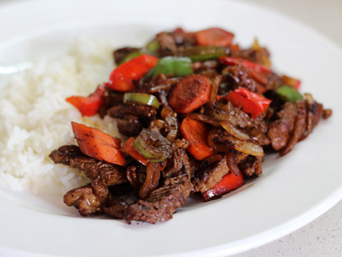

Made from the top part of the center section of rib—specifically the sixth through the twelfth ribs— the beef rib primal cut is used for the traditional standing rib roast (also called prime rib). It's also the source of the delectable ribeye steak as well as the classic French entrecôte.
Since they're already tender, steaks and roasts from the beef rib primal can undergo various forms of dry-heat cooking and remain tender.
It's nearly impossible to describe a beef primal cut without discussing adjacent cuts. In this case, the beef rib primal is situated directly above the beef plate. Exactly where it's divided is somewhat arbitrary. Nevertheless, the lower parts of those ribs—whether we attribute them to the rib primal or the plate primal—are where beef short ribs come from.
Entrecôte strips with vegetables
Prep: 10 mins
Cook: 15 mins
Total: 25 mins
Servings: 2 servings
Ingredients
- 200g thinly cut Entrecôte strips
- 125g white onion cut into strips
- 185g bellpepper diced
- 1/2 or 85g of a medium green bellpepper diced
- 1/2 or 40g of a spicy pepper
- 120g thinly sliced carrots
- 1 thinly sliced clove of garlic
- high smoke point oil to very lightly cover the surface of the pan
- Teriyaki sauce, to taste or 10ml
- Soy Sauce, to taste or 10ml
- 9g Silan
- Salt & Pepper, to taste
Recipe
- Mix the raw entrecôte strips with Teriyaki sauce, salt and pepper.
- Heat a stickfree pan and pour the oil in.
- Roast the strips for 2-3 minutes or until desired doneness & set side.
- In the same pan lightly fry the onions and garlic until coloration.
- Add the peppers and carrots and immediately start mixing for about 2-3 minutes or until done.
- Add the soy sauce, Silan and strips and keep mixing.
- Add 1/3 cup of water mix for another minute and serve immediately
It is recommended to serve with rice or noodles
Tip
- Entrecôte can be subsituted for sirloin